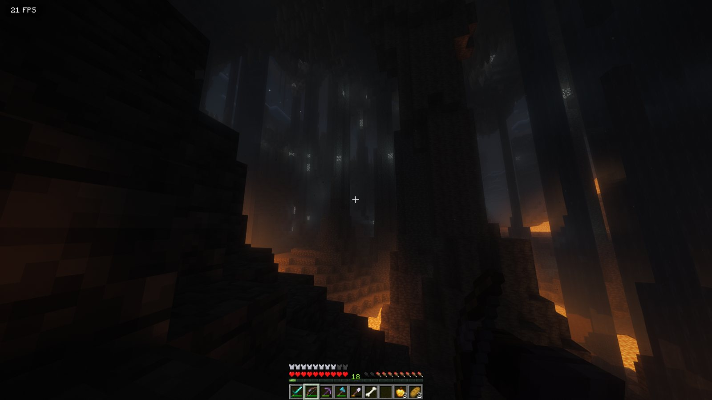
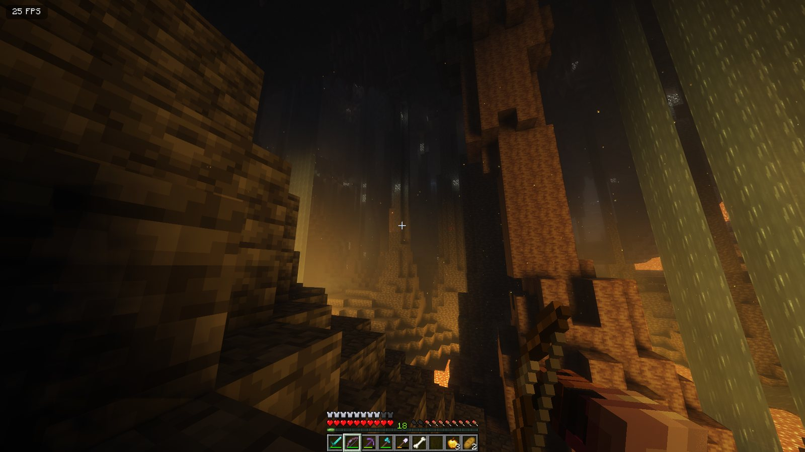

JRAFT
Minecraft 26.3 on Fabric with new worlds, shaders, 3D everything, real sounds and a lot of small comforts. One small app installs it, keeps it updated and puts you straight into the game.
Two shaders, one cave
The same spot in a lava-lit cave, a minute apart. Drag the line to compare.

 Rethinking VoxelsComplementary + Euphoria
Rethinking VoxelsComplementary + Euphoria
Rethinking Voxels
Light travels through the world as voxels: lava and torches light up the walls around them, coloured and bouncing. Warm and bright underground.
Complementary Reimagined + Euphoria Patches
The default. Moodier and darker underground, with Euphoria's extra options on top. Pick the pack with EuphoriaPatches in its name.


Rethinking VoxelsComplementary + EuphoriaWhat's in it
The broad strokes. All of it runs on your side; the JRAFT server runs the same world generation, plus voice chat.
New worlds
Bigger mountains and valleys, new biomes, a reworked Nether and End, more structures, and terrain drawn far past your render distance.
Terralith, Tectonic, Incendium, Nullscape, Structory, Better Trees, Distant Horizons
Light and atmosphere
Shaders, connected textures, dynamic light from held torches, and particles for leaves, rain, cave dust, waterfalls and splashes.
Iris, Complementary + Euphoria Patches, Rethinking Voxels, Continuity, LambDynamicLights, Visuality, Particular, Falling Leaves, Particle Rain, Cave Dust, Effectual
Movement and animation
Animated mobs, a body you can see in first person, 3D skins, a camera that leans and sways, Punchy's swings, and elytra that bank and leave trails.
Fresh Animations (EMF, ETF), Not Enough Animations, First-person Model, 3D Skin Layers, Camera Overhaul, Punchy, Elytra Physics, Cool Elytra Roll, Elytra Trails
Sound
Footsteps that match the block, biome ambience, sound that echoes and muffles with the space around you, and drips in caves.
Presence Footsteps, Ambient Sounds, Sound Physics Remastered, Entity Sound Features, Drip Sounds, Sounds
3D and nature packs
3D tools, armor, food, potions, books, trims and torches, plus fuller grass, flowers, bushes and leaves. JRAFT's own two packs combine the grass and leaf packs so all of them show at once.
Fresh Flowers, Fresh Food, Actually 3D Stuff, HyperPunchy, Glowing 3D Armor, Refined Torches, Grassrise, Os' Colorful Grasses and Leaves, Better Leaves, Bushier Bushes, JRAFT Grass, JRAFT Leaves
Comfort
Voice chat, a zoom key, food and saturation bars, shulker previews, walking with your inventory open, searchable menus, chat heads and a better debug screen.
Simple Voice Chat, Ok Zoomer, AppleSkin, Shulker Box Tooltip, InvMove, Mouse Tweaks, Searchables, Chat Heads, Chat Patches, BetterF3
Speed
All of the above has to run on ordinary PCs, so the pack carries the usual performance mods, and the game drops its frame rate when you tab out.
Sodium, Sodium Extra, ModernFix, FerriteCore, ImmediatelyFast, Entity Culling, More Culling, BadOptimizations, ScalableLux, Dynamic FPS, Particle Core
Tuned to your PC
The first time you start it, the app reads your graphics card and picks one of four presets. After that your own settings stay.
Low
Integrated graphics, older cards- Chunks
- 3
- Far terrain
- Distant Horizons
- Shaders
- on, lowest
Medium
GTX 10 and 16 series, RX 470 to 5700- Chunks
- 8
- Far terrain
- 64 chunks
- Shaders
- off
High
Most RTX and recent Radeon cards- Chunks
- 8
- Far terrain
- 128 chunks
- Shaders
- on
Ultra
RTX 3080, 4070, 5060 and up, RX 7800 and up- Chunks
- 12
- Far terrain
- 256 chunks
- Shaders
- on
Playing
- Download the app for your system.
- Open it. Do this every time you play: that's how you get updates. It uses your Prism Launcher if you have one, or brings a portable one, and adds a JRAFT instance.
- The first time, sign in with your Microsoft account in Prism. After that it goes straight into the game and joins the JRAFT server, voice chat included.